Сравнение прогонов E06 → E07
Модель deepseek-v4-flash, пул из 12 задач. Клик по картинке — открыть в полном размере.
61 → 57средний score
5/12 → 2/6без жёстких конфликтов
48 → 35пересечений стрелок
fix-broken +21
починка готовой плохой схемы, а не постройка с нуля
E06 64/100
медиана
32 итераций · 2 пересечений · отказов 1 · без конфликтов 100%
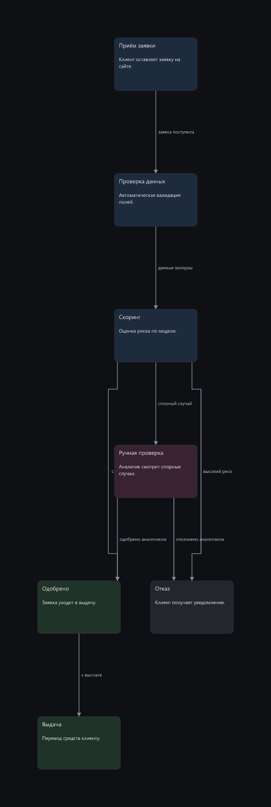
E07 85/100
медиана ±22 по 3 прогонам
19 итераций · 1 пересечений · отказов 0 · без конфликтов 100%
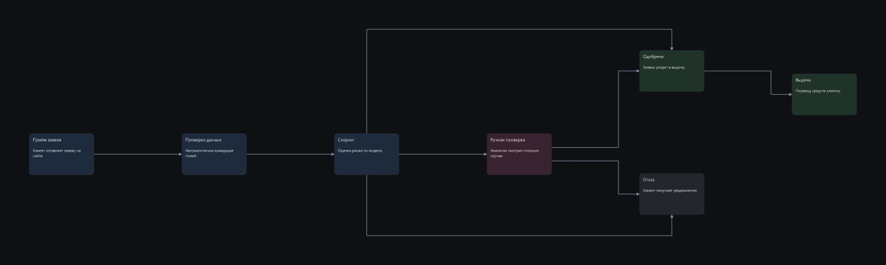
states-order +7
граф с циклами и обратными связями
E06 61/100
медиана
9 итераций · 3 пересечений · отказов 0 · без конфликтов 0%
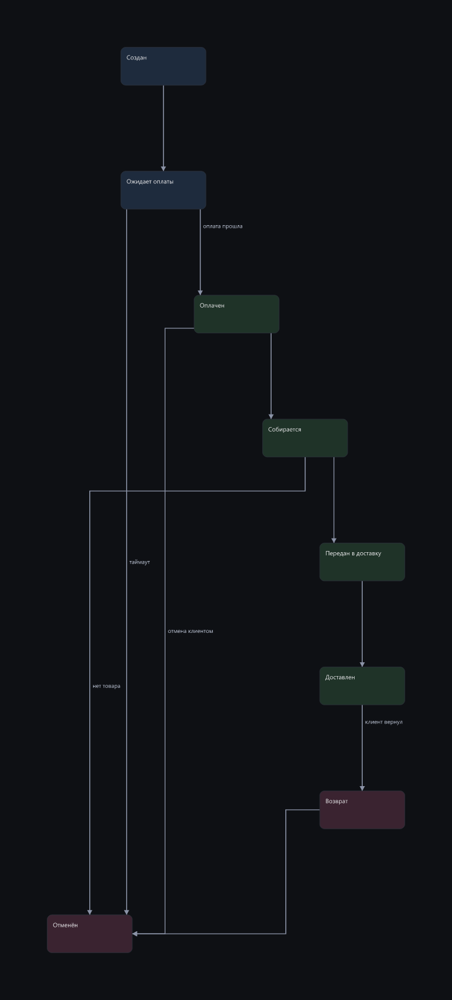
E07 68/100
медиана ±17 по 3 прогонам
14 итераций · 3 пересечений · отказов 0 · без конфликтов 67%
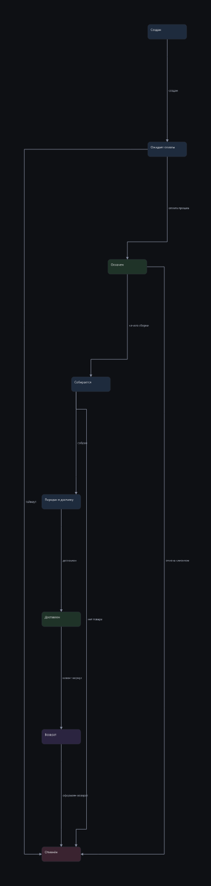
tree-org +13
иерархия, ветви должны держаться у своих корней
E06 47/100
медиана
50 итераций · 0 пересечений · отказов 0 · без конфликтов 0%
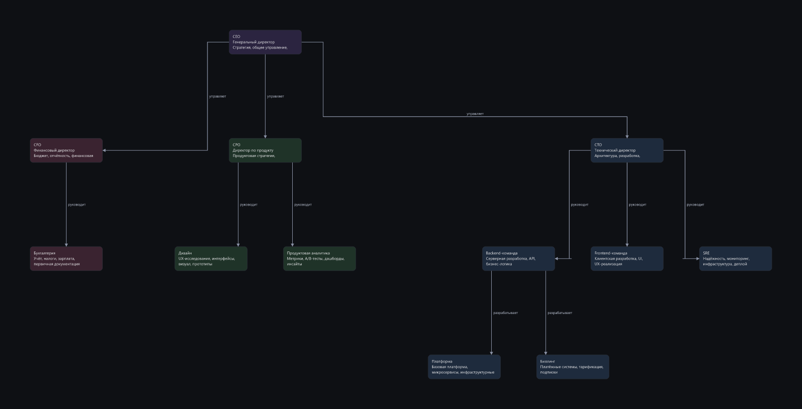
E07 60/100
медиана ±48 по 3 прогонам
31 итераций · 2 пересечений · отказов 0 · без конфликтов 0%
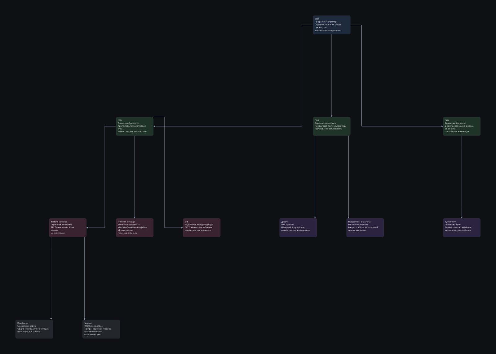
wiki-anime +16
вики по документу, чистый лист, 8-10 узлов, дерево связей
E06 39/100
медиана
13 итераций · 8 пересечений · отказов 0 · без конфликтов 0%
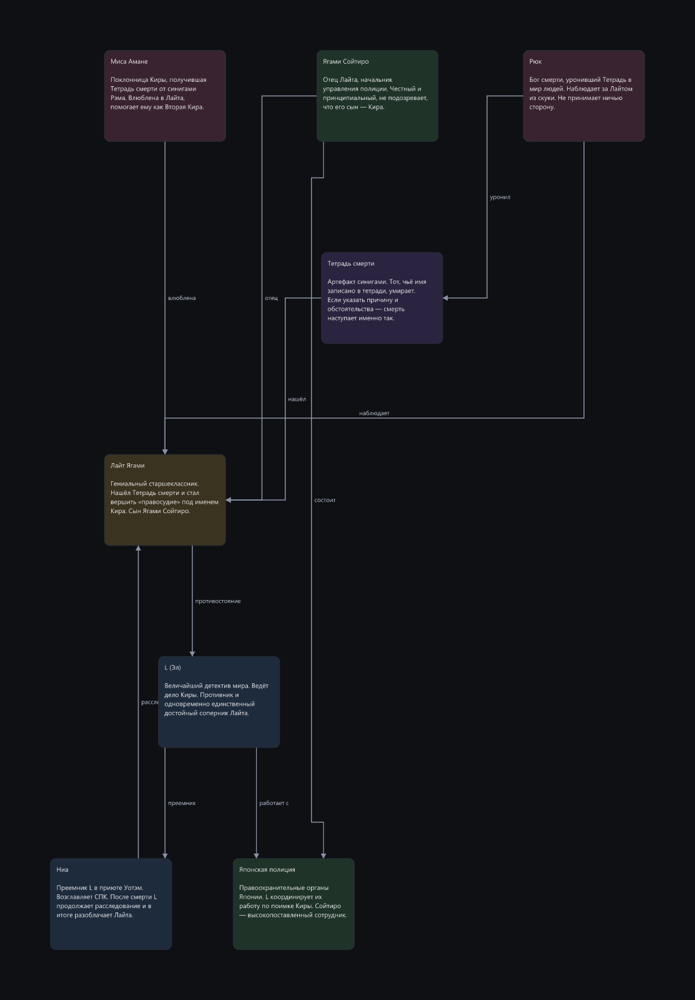
E07 55/100
медиана ±18 по 3 прогонам
33 итераций · 4 пересечений · отказов 0 · без конфликтов 0%
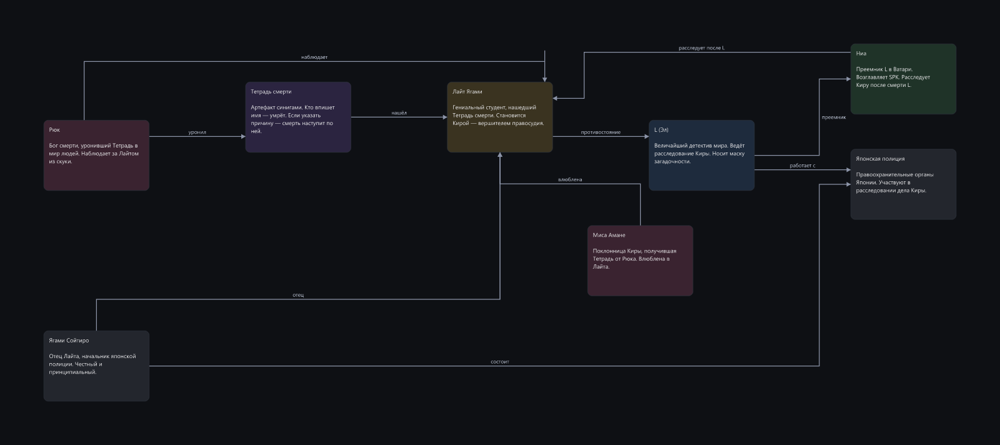
extend-existing -10
дополнение готового графа новыми узлами без ломки старого
E06 63/100
медиана
16 итераций · 3 пересечений · отказов 0 · без конфликтов 0%
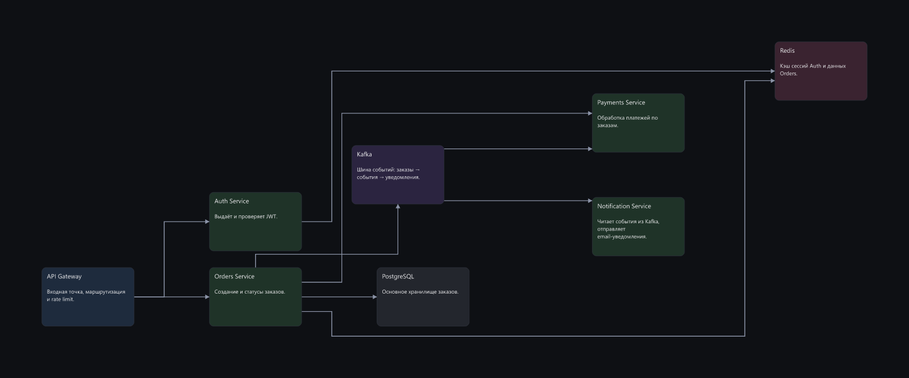
E07 53/100
медиана ±3 по 3 прогонам
24 итераций · 5 пересечений · отказов 1 · без конфликтов 0%
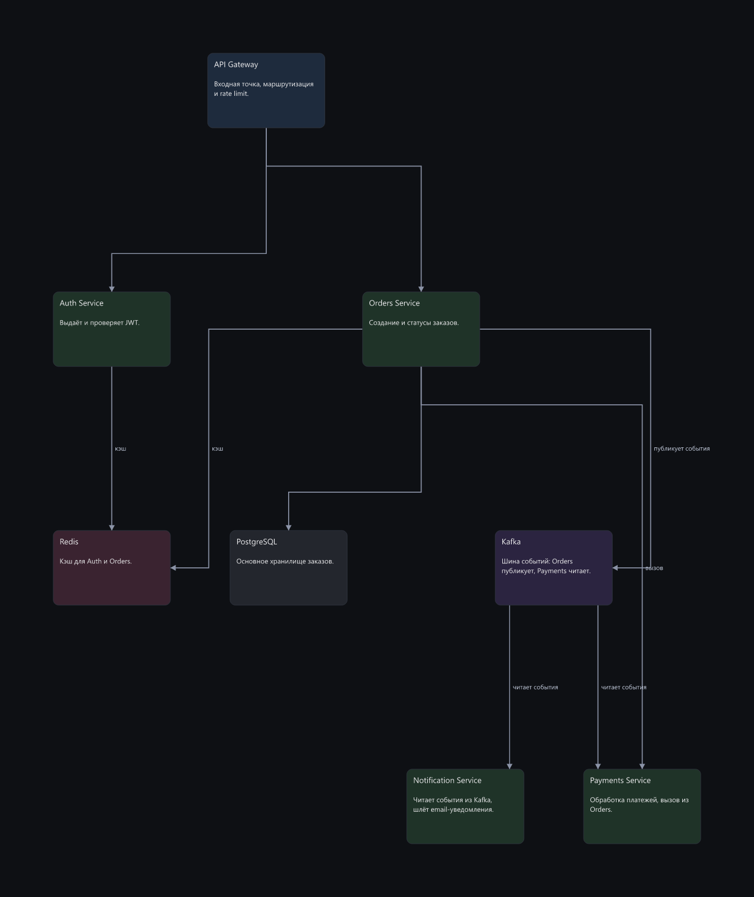
dense-arch -2
стресс: 14 узлов, плотный граф, несколько подсистем
E06 24/100
медиана
13 итераций · 17 пересечений · отказов 0 · без конфликтов 0%
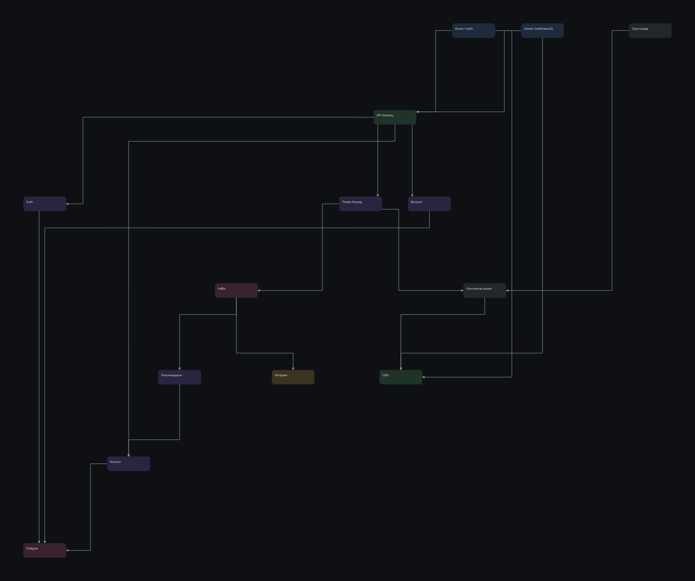
E07 22/100
медиана ±8 по 3 прогонам
13 итераций · 20 пересечений · отказов 0 · без конфликтов 0%
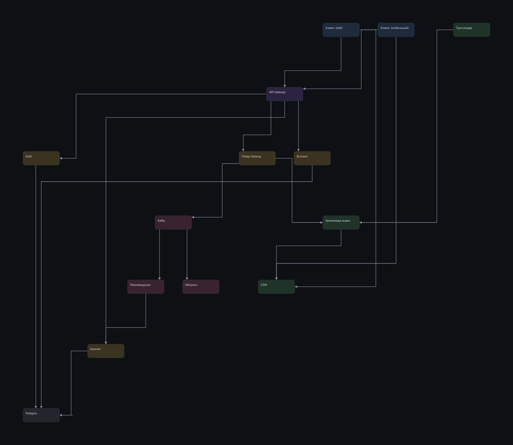
cards-set
не граф: набор карточек, сетка и воздух
E06 100/100
медиана
13 итераций · 0 пересечений · отказов 0 · без конфликтов 100%
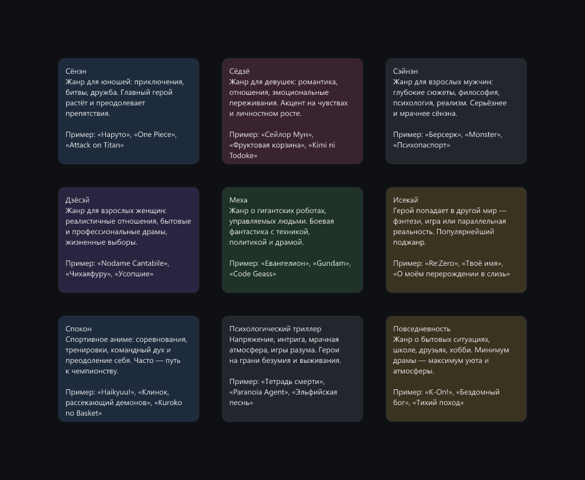
next-to-occupied
новая композиция рядом с занятой зоной, без наложений
E06 98/100
медиана
13 итераций · 0 пересечений · отказов 0 · без конфликтов 100%
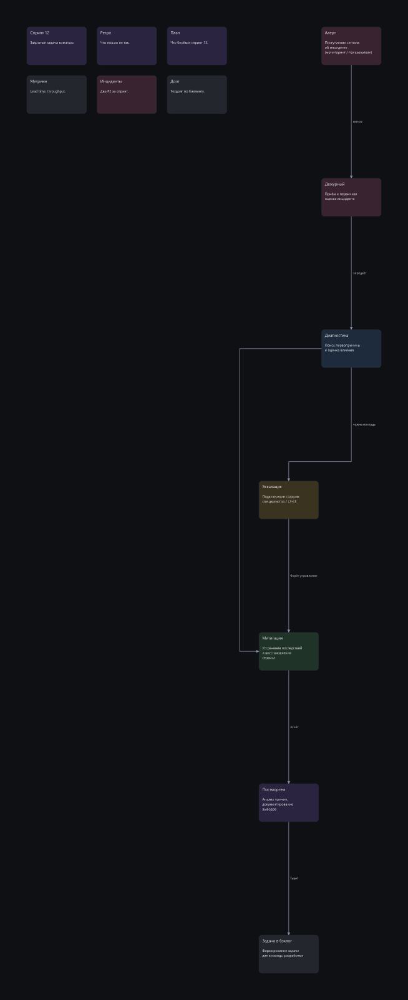
overlap-stack
особое требование внутри схемы: часть блоков намеренно внахлёст
E06 22/100
медиана
38 итераций · 6 пересечений · отказов 2 · без конфликтов 0%
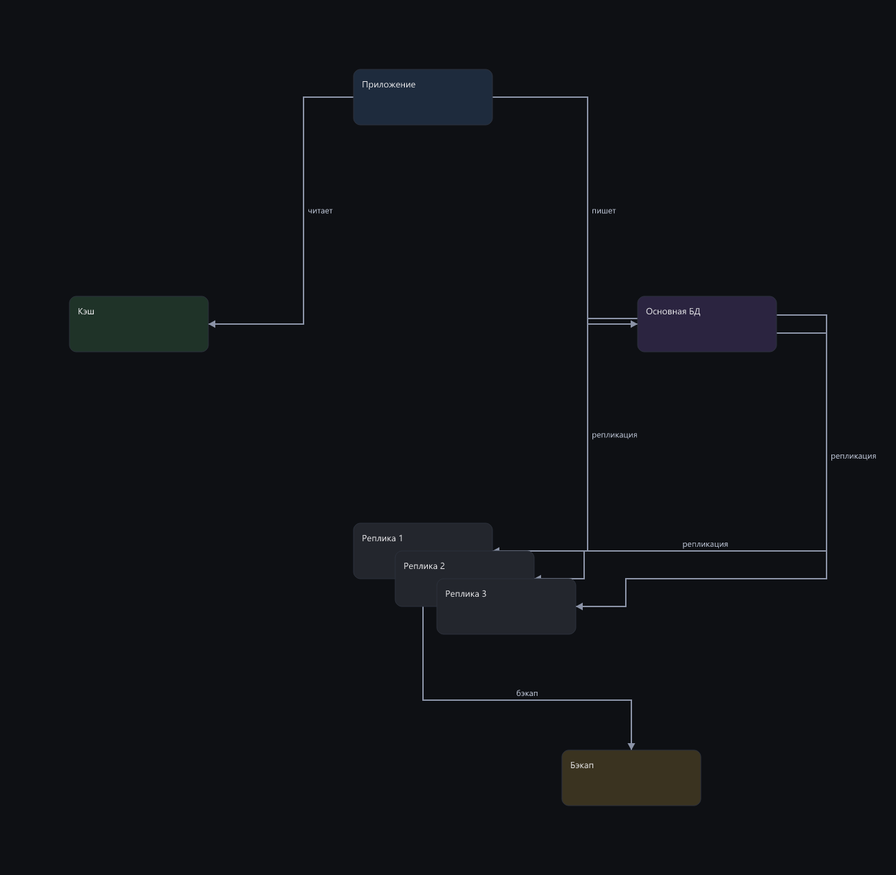
pipeline-cicd
линейный конвейер с ветвлением, направление слева направо
E06 100/100
медиана
6 итераций · 0 пересечений · отказов 0 · без конфликтов 100%
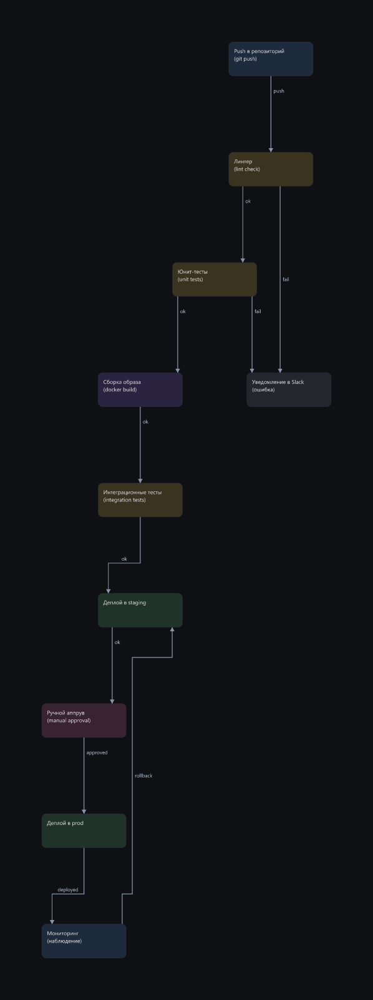
tight-row
особое требование внутри настоящей схемы: часть узлов плотным рядом
E06 17/100
медиана
8 итераций · 9 пересечений · отказов 1 · без конфликтов 0%
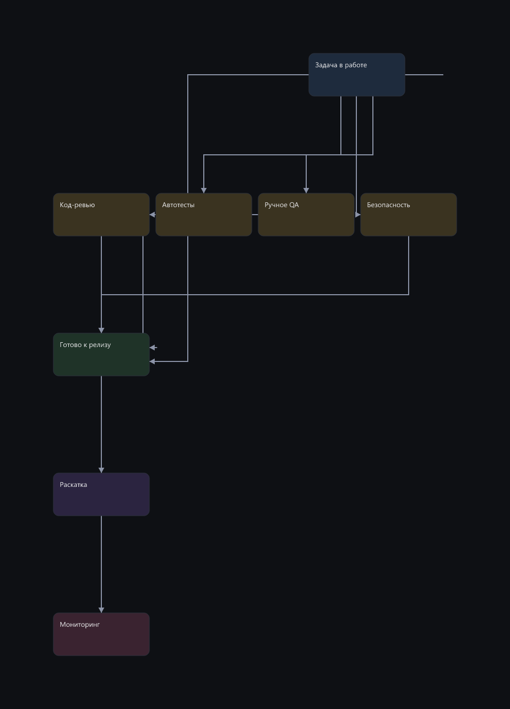
wide-timeline
композиция, которой идейно положено быть широкой и низкой
E06 100/100
медиана
8 итераций · 0 пересечений · отказов 0 · без конфликтов 100%
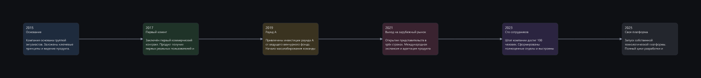